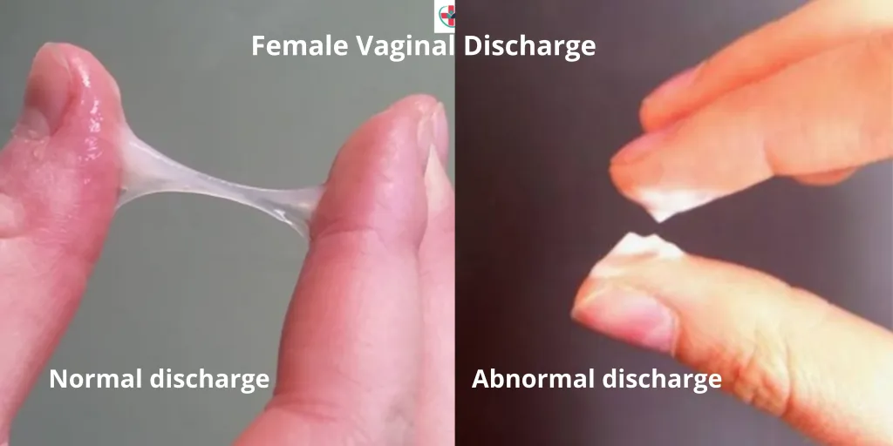
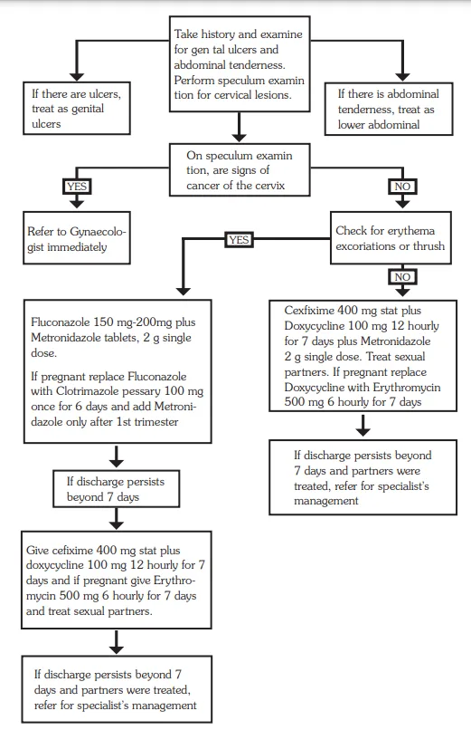

Expanded Nursing Uganda Explanation
Cushing’s syndrome should be understood beyond a short definition. Link the concept to patient history, focused assessment, common risks, nursing priorities, documentation and evaluation of outcomes.
01 CUSHING’S SYNDROME
Cushing’s syndrome results from secretion of excessive cortisol either in response to excess ACTH production by the pituitary tumors and adrenal adenoma or nodular hyperplasia.
Cushing’s syndrome is simply defined as a hormonal disorder associated with excessive production of corticosteroids by the adrenal gland or the pituitary gland and/or prolonged use of corticosteroids.
Hypersecretion of ACTH. (disease)
- Hypersecretion of ACTH by the anterior pituitary-causes increased release of both cortisol and androgenic hormones
Hypersecretion of Cortisol. (syndrome)
- … too much cortisol secreted by the adrenal cortex organ itself.
02 Causes of Cushing’s Syndrome
Cushing’s syndrome arises from excessive cortisol production , which can be caused by;
- Pituitary Adenoma (Cushing’s Disease) : This is the most common cause, involving a non-cancerous tumor in the pituitary gland. The tumor produces excessive amounts of adrenocorticotropic hormone (ACTH), which in turn stimulates the adrenal glands to produce excess cortisol.
- Adrenal Adenoma (Primary Adrenal Hyperplasia) : A non-cancerous tumor within the adrenal glands themselves. The tumor directly produces excess cortisol, bypassing the regulation of ACTH.
- Adrenal Carcinoma : A cancerous tumor in the adrenal gland. The cancerous cells uncontrollably produce large amounts of cortisol.
- Iatrogenic Cushing’s Syndrome : This type is caused by long-term use of corticosteroid medications. Corticosteroids, such as prednisone, are synthetic versions of cortisol, and long-term use can lead to similar symptoms as Cushing’s syndrome.
03 Classifications of Cushing’s Syndrome:
Cushing’s syndrome can be classified based on the underlying cause of excess cortisol production:
1. ACTH-Dependent Cushing’s Syndrome :
Cause : Excess cortisol production is driven by high levels of ACTH. This can occur due to:
- Pituitary Adenoma (Cushing’s Disease) : Most common cause, with a tumor in the pituitary gland producing ACTH.
- Ectopic ACTH Syndrome: A tumor outside the pituitary gland produces ACTH, such as in the lungs, pancreas, or thymus.
2. ACTH-Independent Cushing’s Syndrome :
Cause : Excess cortisol production is not driven by ACTH, but rather by the adrenal glands themselves. This can occur due to:
- Adrenal Adenoma (Primary Adrenal Hyperplasia) : A benign tumor in the adrenal gland directly producing cortisol.
- Adrenal Carcinoma: A malignant tumor in the adrenal gland producing excessive cortisol.
- Iatrogenic Cushing’s Syndrome : Long-term use of corticosteroid medications.
04 Signs and Symptoms of Cushing’s Syndrome:
Cushing’s syndrome is a condition caused by prolonged exposure to high levels of cortisol, a hormone produced by the adrenal glands. This can be due to an adrenal tumor, pituitary tumor, or external medications.
- Weight Gain : Cortisol promotes fat deposition, especially in the face, abdomen, and upper back. Increased cortisol levels lead to increased fat storage in these areas.
- Moon Face: A round, puffy face due to fat deposition. Cortisol stimulates fat accumulation in the face, resulting in a characteristic rounded appearance.
- Buffalo Hump: Fat deposition in the upper back between the shoulders, creating a hump. Similar to moon face, cortisol leads to fat accumulation in this specific area.
- Thinning Skin : The skin becomes thinner and more fragile due to protein breakdown. Cortisol promotes protein breakdown, leading to thinner skin, making it more prone to tearing and bruising.
- Easy Bruising : Bruising occurs more easily due to the thinning of the skin and increased fragility of blood vessels. Thin skin and increased fragility of blood vessels make it easier for the capillaries to leak, causing bruising.
- Striae (Stretch Marks) : Stretch marks appear on the abdomen, thighs, and breasts due to rapid skin stretching and thinning. Cortisol weakens the collagen fibers in the skin, making it more prone to tearing, leading to striae.
- Purple Striae (Purple Stretch Marks) : Stretch marks appear purple or red due to increased blood vessel fragility and rupture. Similar to regular striae, but the increased vascular fragility leads to discoloration.
- Acne : Cortisol stimulates oil production in the skin, leading to acne. Increased oil production clogs pores, promoting bacterial growth and causing acne.
- Hirsutism (Excessive Hair Growth) : Excessive hair growth on the face, chest, and back, particularly in women. Cortisol can change the way the body processes androgens, leading to increased hair growth in areas typically affected by androgens.
- Muscle Weakness and Fatigue : Muscle breakdown and weakness due to protein catabolism. Cortisol promotes protein breakdown, weakening muscles and contributing to fatigue.
- High Blood Pressure : Cortisol increases blood pressure by constricting blood vessels and increasing sodium retention. Increased cortisol levels directly affect blood pressure regulation, causing vasoconstriction and increased sodium retention.
- High Blood Sugar : Cortisol inhibits insulin’s action, leading to high blood sugar levels. Cortisol’s interference with insulin function leads to impaired glucose uptake and utilization, resulting in high blood sugar.
- Mood Changes and Depression : Cortisol can affect mood and lead to depression. Chronic exposure to high cortisol levels can disrupt neurotransmitters involved in mood regulation, leading to mood swings and depression.
- Increased Thirst and Frequent Urination : Increased thirst and urination due to increased fluid loss and sodium excretion. Cortisol’s influence on fluid balance leads to increased sodium excretion and water loss, causing thirst and frequent urination.
- Osteoporosis : Increased bone loss and decreased bone density due to protein breakdown and calcium excretion. Cortisol’s effect on protein and calcium metabolism weakens bones, increasing the risk of fractures.
- Menstrual Irregularities : Irregular periods or amenorrhea (absence of periods) in women. High cortisol levels can interfere with the hormone regulation of the menstrual cycle.
- Impotence : Erectile dysfunction in men due to hormonal imbalances and reduced testosterone levels. Cortisol’s influence on hormone balance can lead to reduced testosterone levels, contributing to impotence.
- Delayed Wound Healing : Wounds heal more slowly due to impaired immune function and tissue repair. Cortisol’s immunosuppressive effect inhibits the body’s natural healing response, delaying wound healing.
05 Diagnosis and Investigations of Cushing’s Syndrome
1. Clinical Evaluation :
- History and Physical Examination : Detailed medical history focusing on symptoms like weight gain, fatigue, muscle weakness, skin changes, and hypertension. Physical examination to assess for signs of Cushing’s, such as moon face, buffalo hump, purple striae, and high blood pressure.
2. Laboratory Tests :
- 24-Hour Urine Free Cortisol: Measures the total amount of cortisol excreted in urine over 24 hours. A high level is suggestive of Cushing’s syndrome.
- Overnight Dexamethasone Suppression Test: A low dose of dexamethasone (a synthetic corticosteroid) is given at bedtime. Ideally, this should suppress cortisol production in a healthy individual. In Cushing’s, cortisol levels remain high, indicating the problem is not responsive to feedback suppression.
- ACTH Levels : Measured to distinguish between ACTH-dependent and ACTH-independent Cushing’s.
- Cortisol Levels : Blood tests can measure serum cortisol levels, particularly in the morning when they should be high.
3. Imaging Studies :
- MRI of the Pituitary Gland : To visualize the pituitary gland and detect any tumors (for Cushing’s disease).
- CT or MRI of the Adrenal Glands : To detect tumors in the adrenal glands (for primary adrenal hyperplasia or carcinoma).
Management of Cushing’s Syndrome
Treatment is dependent on the site of the disease.
- If pituitary source, may need transsphenoidal hypophysectomy (surgery done to remove the pituitary gland)
- Radiation of pituitary also appropriate
- Adrenalectomy may be needed in case of adrenal hypertrophy
- Adrenal enzyme reducers may be indicated if source if ectopic and inoperable. Examples include: ketoconazole, mitotane and metyrapone.
- If cause is related to excessive steroid therapy, tapering slowly to a minimum dosage may be appropriate.
Assessment:
Patient History: Obtain a detailed medical history focusing on:
- Symptoms : Weight gain, fatigue, muscle weakness, skin changes (striae, acne, hirsutism), hypertension, menstrual irregularities, mood swings, depression, sleep disturbances, etc.
- Family History : Any history of Cushing’s or other endocrine disorders.
- Medication History: Current medications, especially corticosteroid use, and previous treatments.
Physical Examination : Thoroughly assess for signs of Cushing’s, including:
- Moon Face: Round, puffy face.
- Buffalo Hump : Fat deposit on the upper back.
- Purple Striae : Stretch marks on the abdomen, thighs, and breasts.
- Thinning Skin and Easy Bruising : Due to collagen breakdown.
- Hypertension : Elevated blood pressure.
- Proximal Muscle Weakness : Weakness in the arms and legs.
Investigations :
Laboratory Tests :
- 24-Hour Urine Free Cortisol
- Overnight Dexamethasone Suppression Test
- ACTH Levels
- Serum Cortisol Levels
- Other Hormonal Tests: (TSH, Thyroid Function, etc.)
Imaging Studies :
- MRI of the Pituitary Gland: For Cushing’s disease.
- CT or MRI of the Adrenal Glands: For primary adrenal hyperplasia or carcinoma.
Reassurance and Explanation:
- Communicate Clearly : Explain the diagnosis and treatment plan in a way that the patient understands.
- Address Concerns : Answer any questions the patient may have.
- Empathy and Support: Emphasize that Cushing’s can be effectively managed.
- Provide Educational Resources : Offer reliable information about Cushing’s and its management.
Medical Management:
Treatment Goals :
- Control Excess Cortisol : Reduce cortisol levels to a normal range.
- Manage Symptoms : Address specific symptoms like hypertension, diabetes, and osteoporosis.
- Prevent Complications : Minimize long-term risks associated with Cushing’s.
Treatment Strategies :
ACTH-Dependent Cushing’s :
- Surgery : Pituitary tumor removal (transsphenoidal surgery).
- Radiation Therapy : Used if surgery is not possible or unsuccessful.
- Medical Therapy : Drugs like ketoconazole or pasireotide to suppress ACTH production.
ACTH-Independent Cushing’s :
- Surgery : Removal of adrenal tumors.
- Medical Therapy : Drugs like metyrapone, aminoglutethimide, or mitotane to block cortisol production.
Iatrogenic Cushing’s (Corticosteroid-Induced) :
- Tapering the Corticosteroid : Slowly reducing the dose under close monitoring.
- Alternatives : Exploring non-corticosteroid treatments if possible.
Nursing Care:
- Monitoring for Complications : Regularly assess for signs of hyperglycemia, hypertension, infection, electrolyte imbalance, and other potential complications.
- Education and Support: Provide ongoing education about the disease and treatment plan.
- Symptom Management : Assist with managing symptoms like weight gain, fatigue, skin problems, and mood changes.
- Promote Self-Care: Encourage healthy lifestyle practices, including diet, exercise, and stress management.
Follow-up Care:
- Regular Checkups : Schedule routine visits for monitoring and adjustments to treatment.
- Laboratory Tests : Monitor cortisol levels and other relevant markers.
- Imaging Studies : Periodic imaging to assess the tumor status if applicable.
- Long-Term Management: Focus on controlling symptoms, preventing complications, and maintaining quality of life.
Hypophysectomy
06 Nursing care plan for Cushing’s syndrome:
- Assessment Nursing Diagnosis Goals/Expected Outcomes Interventions Rationale Evaluation
- 1. Patient presents with central obesity, moon face, and buffalo hump. Distrupted Body Image related to changes in physical appearance as evidenced by patient expressing dissatisfaction with appearance. The patient will verbalize acceptance of body changes and demonstrate positive body image behaviors. – Provide emotional support and encourage the patient to express feelings about body image changes. – Involve the patient in grooming and self-care activities to enhance self-esteem. – Refer to a counselor or support group specializing in chronic illness and body image issues. Emotional support helps the patient cope with body changes. Involvement in self-care promotes a sense of control and improves self-esteem. Counseling and support groups offer a space for shared experiences and coping strategies. The patient expresses acceptance of body changes and participates in self-care activities.
- 2. Patient reports fatigue, muscle weakness, and difficulty with physical activities. Activity Intolerance related to muscle weakness and fatigue as evidenced by patient’s inability to perform daily activities without exhaustion. The patient will demonstrate improved activity tolerance and participate in daily activities with minimal fatigue. – Encourage rest periods between activities to conserve energy. – Assist with activities of daily living (ADLs) as needed. – Gradually increase physical activity as tolerated. Rest periods prevent exhaustion and allow for energy conservation. Assistance with ADLs reduces the physical strain on the patient. Gradual increase in activity helps build endurance without overwhelming the patient. The patient reports increased energy and is able to participate in daily activities with minimal fatigue.
- 3. Patient presents with hypertension, edema, and weight gain. Excess Fluid Volume related to sodium and water retention as evidenced by edema, hypertension, and rapid weight gain. The patient will demonstrate reduced edema and stable weight, with blood pressure within normal limits. – Monitor daily weight, intake and output, and blood pressure regularly. – Administer diuretics as prescribed and monitor for effectiveness. – Restrict sodium intake as prescribed and educate the patient on a low-sodium diet. – Elevate edematous limbs to promote venous return. Monitoring helps detect fluid retention and assess intervention effectiveness. Diuretics reduce fluid overload. Sodium restriction helps prevent further fluid retention. Elevation of limbs reduces edema and promotes circulation. The patient shows reduced edema, stable weight, and blood pressure within normal limits.
- 4. Patient has elevated blood glucose levels and history of diabetes mellitus. Risk for Unstable Blood Glucose Levels related to increased cortisol production as evidenced by hyperglycemia. The patient will maintain blood glucose levels within the normal range. – Monitor blood glucose levels regularly and adjust insulin or oral hypoglycemic agents as prescribed. – Educate the patient on the importance of adhering to prescribed diabetic diet and medication regimen. – Teach the patient to recognize signs and symptoms of hyperglycemia and hypoglycemia. – Collaborate with a dietitian to develop an appropriate meal plan. Regular monitoring helps manage blood glucose levels. Adherence to diet and medication prevents blood glucose fluctuations. Early recognition of symptoms allows for prompt intervention. A meal plan supports stable blood glucose levels.
- 5. Patient reports difficulty sleeping, restlessness, and increased stress. Disrupted Sleep Pattern related to elevated cortisol levels as evidenced by patient verbalizing difficulty sleeping and feeling restless. The patient will experience improved sleep patterns and report feeling well-rested. – Establish a regular sleep routine and create a restful environment. – Encourage relaxation techniques before bedtime, such as deep breathing or meditation. – Limit caffeine and fluid intake in the evening. – Administer prescribed sleep aids if needed and monitor their effectiveness. A regular sleep routine promotes better sleep. Relaxation techniques help reduce stress and promote sleep. Limiting caffeine and fluids prevents sleep disturbances. Sleep aids may be necessary to manage sleep disturbances. The patient reports improved sleep quality and feels more rested.
- 6. Patient presents with thin, fragile skin, bruises, and delayed wound healing. Risk for Impaired Skin Integrity related to thinning of the skin and delayed wound healing as evidenced by bruising and skin tears. The patient will maintain intact skin with no further breakdown or injury. – Assess skin condition daily and document any changes. – Protect skin from injury by using padding on bony prominences and gentle handling. – Encourage a high-protein diet to promote skin healing. – Apply prescribed topical treatments to any wounds and monitor for signs of infection. Daily assessment helps identify early signs of skin breakdown. Protecting the skin prevents injury and tears. A high-protein diet supports tissue repair and wound healing. Topical treatments aid in wound healing and prevent infection.
07 Nursing Uganda Clinical Lens
Use Cushing’s syndrome as a practical nursing topic, not only a memorized definition. Start with normal structure and function, then connect it to assessment findings and disease.
- What to understand first: define cushing’s syndrome, identify the normal or expected pattern, then explain what changes when the patient is unwell.
- Why it matters in care: the nurse must recognize risk early, explain findings clearly, document accurately and know when to escalate.
- How to revise it: connect each point to assessment, nursing diagnosis or care problem, intervention, rationale and evaluation.
08 Assessment Guide
- Relevant inspection, palpation, movement, auscultation, vital signs or neurological checks.
- Normal findings, abnormal findings and what each abnormality may indicate.
- Patient history, risk factors and how the body system affects other systems.
09 Nursing Priorities, Rationales and Outcomes
- Use anatomy to explain symptoms and guide focused assessment.
- Recognize findings that need urgent escalation.
- Teach the patient using simple body-system language.
The rationale for these priorities is patient safety: nursing actions should prevent deterioration, reduce discomfort, support recovery and create clear evidence for the next caregiver.
- Expected outcome: The learner can explain normal function, identify abnormal signs and connect them to nursing action.
10 Patient Teaching and Revision Check
- Explain cushing’s syndrome in simple language the patient or caregiver can repeat back.
- Teach warning signs, medicine or follow-up instructions, hygiene or lifestyle points where relevant.
- For exams, prepare a short answer using: definition, causes or risk factors, signs, assessment, management, complications and prevention.
- For ward practice, document baseline findings, actions taken, patient response and the plan for review.
Illustrations and Diagrams (4)




Related Video Lectures
Watch nursing lecture videos on YouTube for this topic. Opens in a new tab.
Watch on YouTubeExternal link: YouTube may use its own cookies and terms. Nursing Uganda is not affiliated with YouTube.